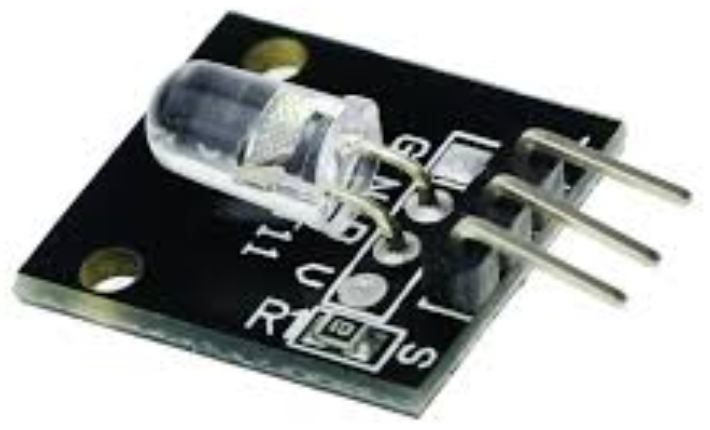

Модуль 7-цветного мигающего светодиода
KY-034 (5 мм)
В основе модуля KY-034 (5 мм) лежит светодиод со встроенной микросхемой и автоматической сменой цвета. Достаточно добавить источник питания и светодиодный модуль будет мигать всеми цветами радуги в разных комбинациях. Это происходит за счёт миниатюрной микросхемы, которая встроена в светодиод.
Программирования не требуется.
Технические характеристики модуля KY-034:
- Напряжение питания — 3…5 В.
- Ток — 40 мА.
- Цвет — желтый, зеленый, синий, красный, розовый, фиолетовый, оранжевый.
- Угол обзора — 150°.
- Длина волны (нм):
- розовый, желтый — 590;
- зеленый — 525...530.
- Сила света (мкд):
- розовый — 200;
- желтый — 600;
- зеленый — 1600.
- Размеры (мм):
- длина — 25
- длина с выводами — 30
- ширина — 15
- высота — 5

Назначение выводов представлено в таблице 1.
Таблица 1
| Контакт | Назначение |
|---|---|
| S | +5 В - Питание положительный полюс |
| Общий (GND) | |
| — | не используется |
Если вывод S подключить к цифровому выводу Arduino, можно управлять включением и выключением светодиода.
Источники
kulibin.su - Модуль 7-ми цветного мигающего светодиода KY-034 (5 мм)